Bonjour à tous. Aujourd'hui, on vous présente un métier du référencement naturel : rédacteur SEO.
Et on part d'une question : ce métier, qui consiste à écrire pour être trouvé sur Google, a-t-il encore un avenir maintenant que l'IA écrit et répond à la place des sites ?
Google répond avant les sites. Que devient le rédacteur SEO ?
Source : Google, recherche « Comment devient-on performant en SEO » (consulté le 25/09/2026), Aperçu IA affiché avant les résultats.
2 / 15
Regardez cette capture : on a tapé « comment devient-on performant en SEO ». Avant le moindre lien, Google affiche un Aperçu IA qui répond directement. L'internaute a sa réponse sans cliquer.
D'où notre question : si Google répond avant les sites, que devient quelqu'un dont le métier est d'écrire pour y apparaître ?
On y répond en quatre temps : le métier, ses compétences et ses outils, l'emploi et la carrière, puis l'IA et ce que nous a dit un professionnel.
Rédacteur SEO : de quoi parle-t-on ?
4 piliersTechniqueContenusUXPopularité
5 étapesAuditSémantiqueOn-siteOff-siteSuivi
« Il écrit les textes d'un site pour que Google les trouve et que les internautes les lisent. »
Rédacteur web SEOContent writerRédacteur-concepteur
≠ Content Managerpilote la ligne éditoriale
≠ SEO Specialists'occupe de la technique
Source : Perez, I., R5.MDEE.12, support des séances 1 et 2, slides 12 et 14 (consulté le 25/09/2026). Illustration générée avec Gemini.
3 / 15
Le rédacteur SEO écrit des contenus pensés pour deux lecteurs à la fois : l'internaute, qu'il faut intéresser, et Google, qui doit comprendre le texte pour le classer.
On le trouve sous plusieurs noms : rédacteur web SEO, content writer, rédacteur-concepteur. Attention à ne pas le confondre avec le Content Manager, qui pilote la ligne éditoriale, ni avec le SEO Specialist, qui s'occupe plutôt de la technique.
Si on reprend votre cours : parmi les quatre piliers du SEO, il porte celui des contenus, et dans le plan en cinq étapes, il intervient à l'étude sémantique et à l'optimisation on-site.
Ses missions : du conseil jusqu'à l'achat
Article de blogS'informer · TOFU
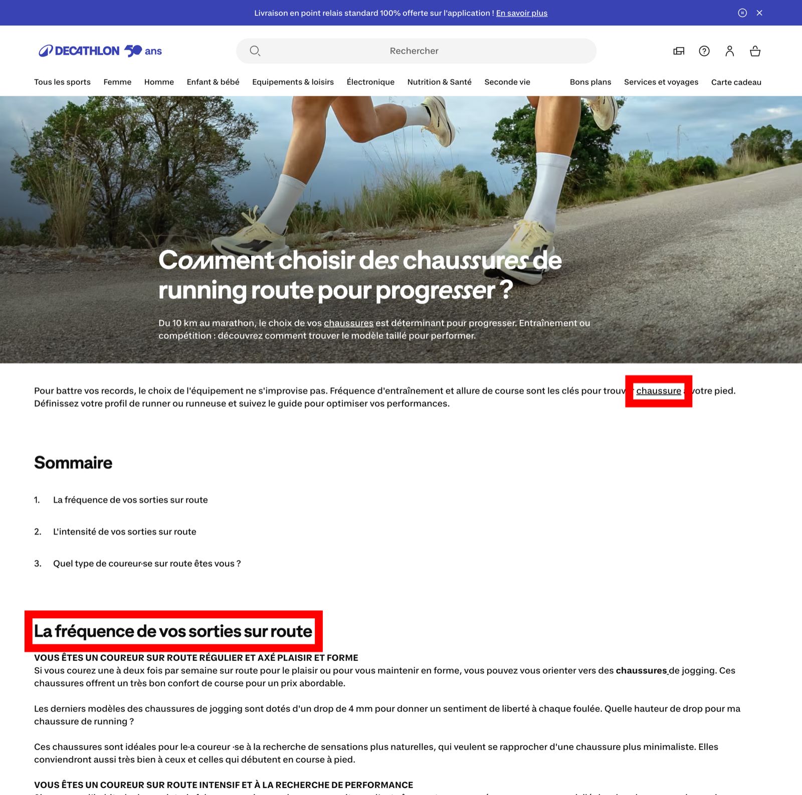
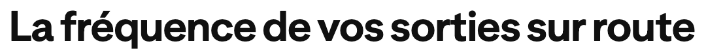
→lien interne
Page catégorieComparer · MOFU
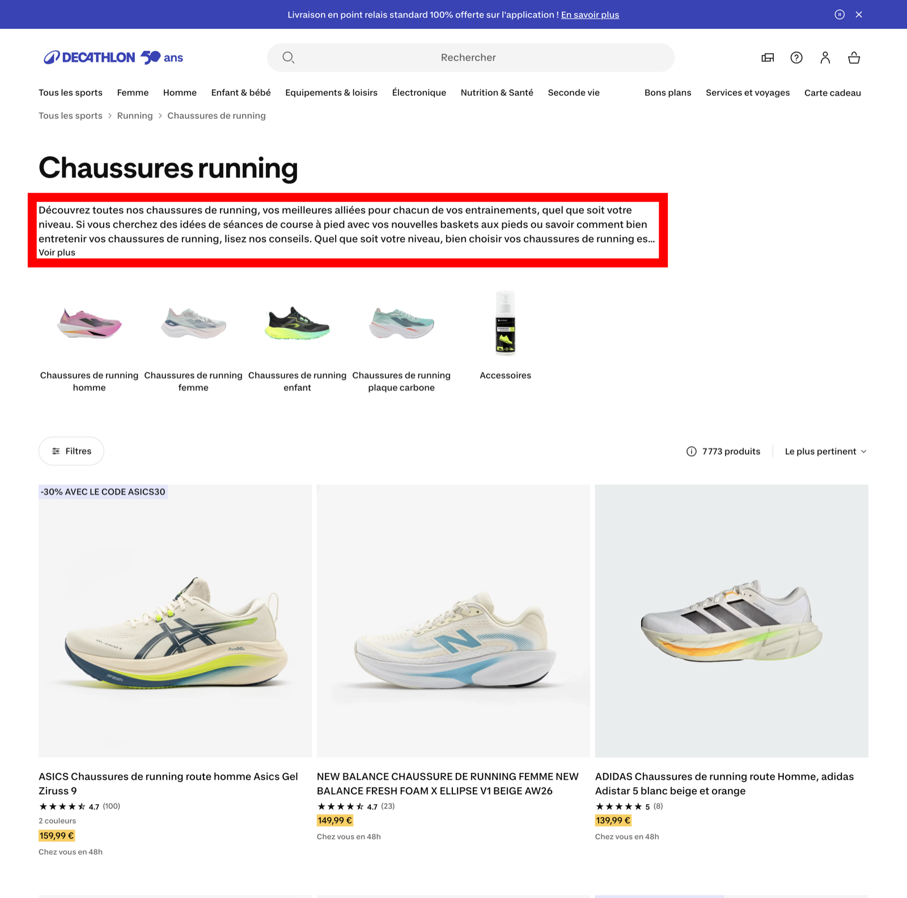
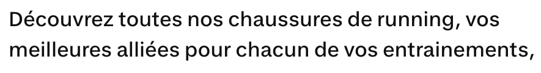
→lien interne
Fiche produitAcheter · BOFU
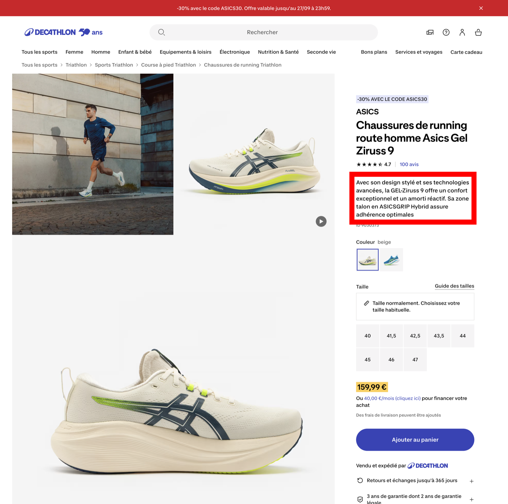
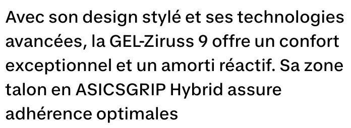
Source : Decathlon, decathlon.fr, article conseil, catégorie « Chaussures running » et fiche Asics Gel Ziruss 9 (consulté le 26/09/2026).
4 / 15
Concrètement, qu'écrit un rédacteur SEO ? Trois grands types de pages, qu'on a pris sur un même site, Decathlon, pour suivre le parcours du client. En rouge, ce que le rédacteur a écrit.
L'article de blog attire quelqu'un qui cherche une information : c'est le haut du tunnel, le TOFU. La page catégorie l'aide à comparer, c'est le milieu. La fiche produit le fait acheter, c'est le bas du tunnel.
Et entre les trois, ce sont les liens internes, écrits par le rédacteur, qui emmènent le lecteur du conseil jusqu'à l'achat. C'est le maillage interne vu en cours.
Le process d'un article
1
Brief
Client, objectif
2
Mot-clé et intention
SemrushKeyword Planner
3
Plan en H2, H3
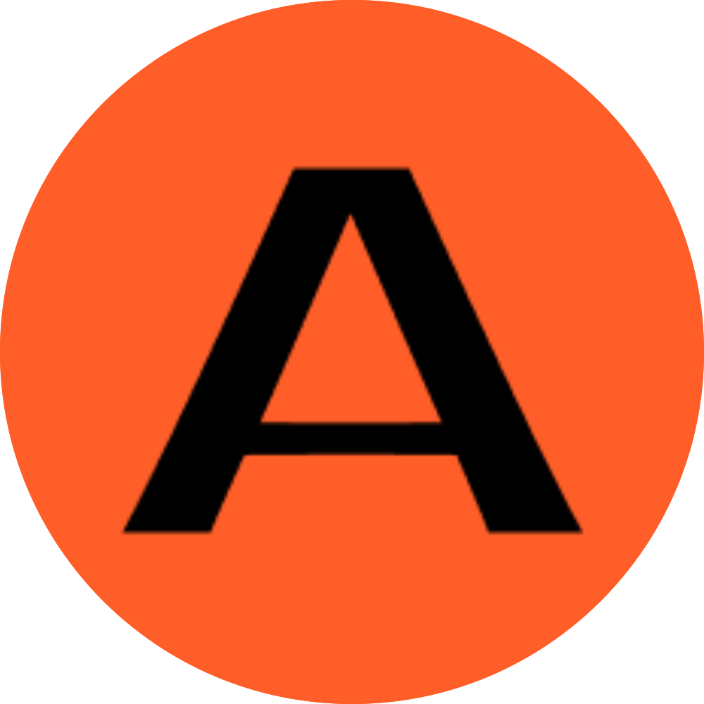
AnswerThePublic
4
Rédaction
AntidoteChatGPT
5
Title, meta, alt
YoastRank Math
6
Liens internes
WordPress
7
Publication et suivi
Search ConsoleGA4
5 / 15
Voici comment se fabrique un article, du brief à la publication.
Tout part d'un brief : le client, son objectif. Ensuite, le rédacteur choisit un mot-clé et vérifie ce que l'internaute cherche vraiment derrière, c'est l'intention de recherche. Il construit un plan en titres H2 et H3, souvent à partir des questions que les gens posent. Puis il rédige, il optimise le titre, la meta description et les descriptions d'images, et il ajoute les liens internes. Enfin, il publie et il suit les résultats dans la Search Console.
Sous chaque étape, les outils qu'il utilise.
Avant / après : le métier en action
Avant · page réelle
Résultat Google
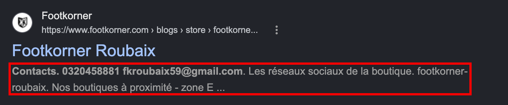
Code source de la page
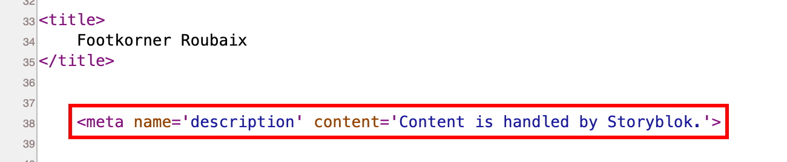
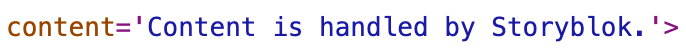
Photo de la boutique
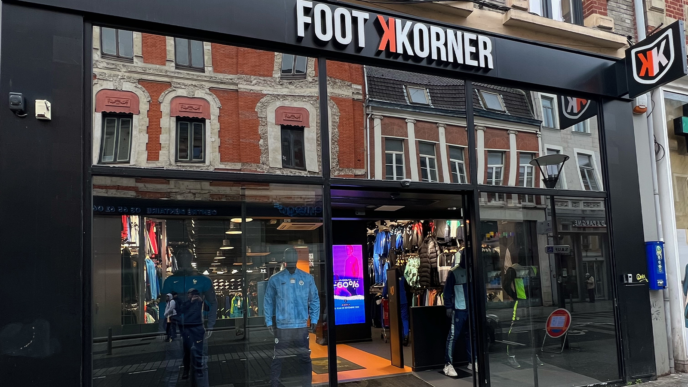
alt : « footkorner-roubaix »
Après · notre réécriture
Résultat Google
1Magasin de sneakers à Roubaix : Footkorner, 28 Grande Rue
footkorner.com › magasins › roubaix
2Sneakers et streetwear en plein centre de Roubaix. Ouvert du lundi au samedi, de 10 h à 19 h 30.
Contenu de la page
3Où acheter des sneakers à Roubaix ?
Notre boutique vous accueille au 28 Grande Rue, du lundi au samedi. 4Découvrez nos nouveautés sneakers avant de passer.
Photo de la boutique
5alt : « façade de la boutique Footkorner, 28 Grande Rue à Roubaix »
1Mot-clé dans le title2Meta qui donne envie de cliquer3H2 sous forme de question4Lien interne5Image décrite
Avant : Footkorner Roubaix, résultat Google, code source et photo de footkorner.com (consultés le 26/09/2026) ; après : réécriture du groupe.
6 / 15
Pour vous montrer le métier plutôt que de le décrire, on est partis d'une vraie page trouvée sur Google : la boutique Footkorner de Roubaix, Grande Rue.
À gauche, la page telle qu'elle est aujourd'hui. En haut, son vrai résultat sur Google : la description, ce sont juste le téléphone et l'adresse mail, qu'on a floutés. Pourquoi ? Parce que dans le code de la page, en dessous, la meta description dit « Content is handled by Storyblok » : un texte technique oublié par le site. Google ne peut pas l'afficher, alors il prend ce qu'il trouve. Et la photo de la boutique a pour texte alternatif « footkorner-roubaix » : ça ne décrit rien.
À droite, notre réécriture. Le mot-clé « magasin de sneakers à Roubaix » est dans le titre, la description donne envie de venir, le sous-titre reprend une vraie question d'internaute, un lien interne envoie vers les produits, et la même photo est enfin décrite.
C'est ça, le travail du rédacteur SEO : même boutique, même adresse, mais maintenant Google comprend la page, et l'internaute a une raison de cliquer.
Ce que demandent les offres d'emploi
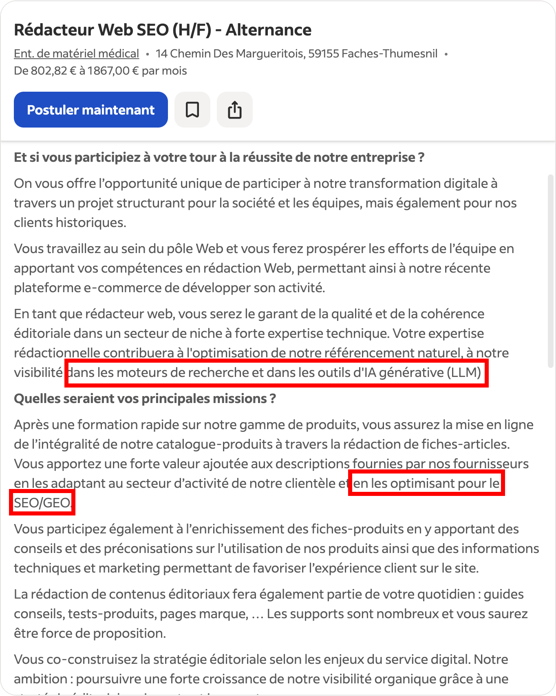
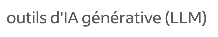
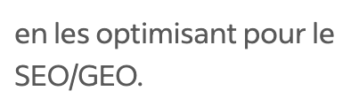
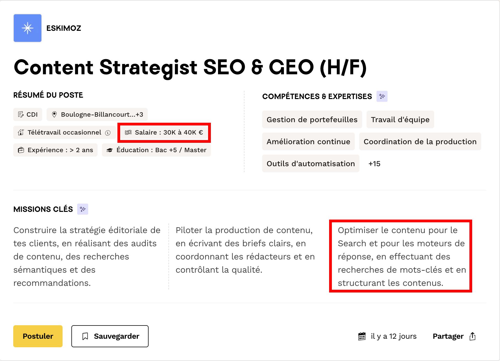
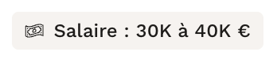
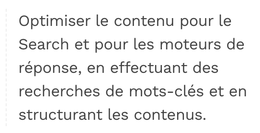
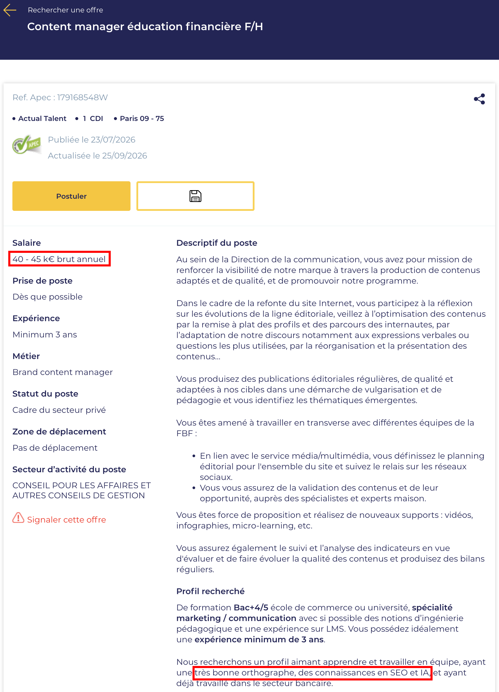
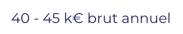
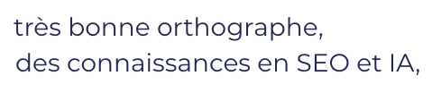
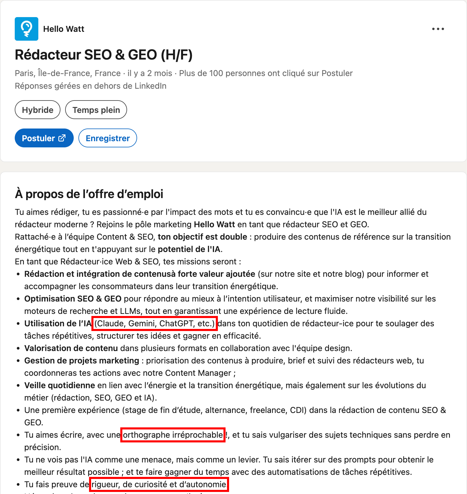
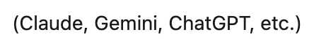
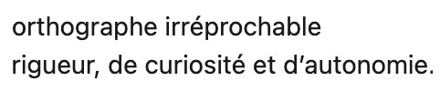
Savoir-faire
Orthographe irréprochableSEO on-page : title, Hn, altRecherche de mots-clésChamp sémantiqueWordPress, bases de HTMLSearch Console
Savoir-être
CuriositéRigueurEsprit de synthèseAdapter son ton à chaque marqueAutonomie
« La compétence la plus sous-estimée… »Citation du professionnel interviewé (question 10), mot pour motAprès l'interview
Sources : Indeed, France Neir ; Welcome to the Jungle, Eskimoz ; APEC, Actual Talent ; LinkedIn, Hello Watt (consultés le 26/09/2026).
7 / 15
Pour savoir ce qu'on attend vraiment d'un rédacteur SEO, on est allés lire de vraies offres, sur quatre sites différents.
Sur Indeed, une alternance à Faches-Thumesnil, juste à côté : on demande d'optimiser les fiches produits pour le SEO, mais aussi pour le GEO, c'est-à-dire pour les IA. Sur Welcome to the Jungle, l'agence Eskimoz cherche un Content Strategist entre 30 et 40 000 euros, pour optimiser les contenus « pour le Search et pour les moteurs de réponse ». Sur l'APEC, un poste de Content Manager exige une très bonne orthographe et des connaissances en SEO et en IA. Et sur LinkedIn, Hello Watt recrute un rédacteur SEO et GEO qui utilise Claude, Gemini et ChatGPT au quotidien.
Ce qui revient partout : une orthographe irréprochable, le SEO, et maintenant l'IA. Côté savoir-être, on retrouve mot pour mot la rigueur, la curiosité et l'autonomie.
Et on a demandé au professionnel quelle compétence était, selon lui, la plus sous-estimée.
Ses outils
Mots-clés
SemrushAhrefsKeyword PlannerAnswerThePublic
Sémantique
YourTextGuruSurfer SEO
Publication
WordPressYoastRank Math
Correction
Antidote
Suivi
Search ConsoleGA4
IA
ChatGPTClaudePerplexity
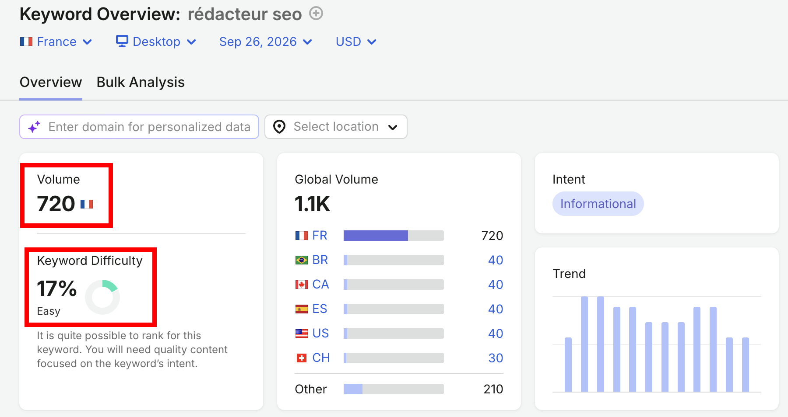
L'outil indispensable selon le pro : question 9
Source : Semrush, Keyword Overview « rédacteur seo », France, ordinateur (consulté le 26/09/2026).
8 / 15
Voici sa boîte à outils, classée par usage.
Pour trouver les mots-clés : Semrush, Ahrefs, le Keyword Planner de Google, AnswerThePublic pour les questions des internautes. Pour enrichir le texte : YourTextGuru ou Surfer SEO, qui disent quels mots un texte doit contenir pour être complet. Pour publier : WordPress, avec une extension SEO comme Yoast ou Rank Math. Antidote pour la correction, la Search Console et Google Analytics pour le suivi.
Et de plus en plus, l'IA.
À droite, une vraie analyse Semrush, faite par nous : le mot-clé « rédacteur seo » est cherché 720 fois par mois en France, avec une difficulté de 17 %, donc facile à travailler. C'est exactement ce que le rédacteur regarde avant d'écrire.
On a aussi demandé au pro quel était l'outil dont il ne pourrait pas se passer.
Salarié ou freelance ?
Salarié
En agence SEO ou de communication
Chez l'annonceur : e-commerce, marque
Dans un média en ligne
Stage et alternance possibles
Stabilité · équipe · formation
Freelance
Plateformes : Malt, sites de rédaction
Payé au mot, à l'article ou à la journée
Souvent spécialisé dans une thématique
Liberté · spécialisation · plusieurs clients
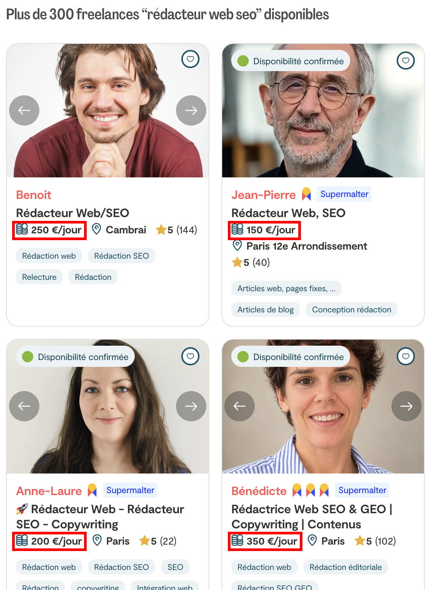
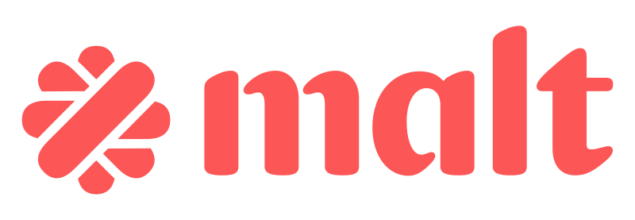
AccèsBac+2 à Bac+5Communication, marketing digital, lettresBeaucoup d'autodidactes
Source : Malt, malt.fr, recherche « rédacteur web seo » (consulté le 26/09/2026).
9 / 15
Deux façons d'exercer ce métier.
En salarié : en agence, chez un annonceur, par exemple un site e-commerce, ou dans un média en ligne. C'est aussi là qu'on peut faire un stage ou une alternance.
En freelance, sur des plateformes comme Malt : le rédacteur est payé au mot, à l'article ou à la journée, et il se spécialise souvent dans une thématique, la santé, la finance, le sport.
À droite, une vraie recherche sur Malt : plus de 300 rédacteurs web SEO disponibles, entre 150 et 350 euros la journée.
Pour y accéder, on voit des profils de bac+2 à bac+5 en communication ou en marketing digital, mais aussi beaucoup d'autodidactes.
Rémunération
1 500 €2 500 €3 500 €
Junior
1 700 à 2 000 €
Confirmé
2 000 à 2 800 €
Senior, content manager
2 800 à 3 500 €
brut par mois, salarié
0,04 à 0,30 €par mot en freelance, selon le niveau et la technicité
240 à 430 €par jour (TJM), du débutant au senior
40 à 120 €un article de 800 mots
Le pro : question 13
Sources : Le Goff, salaire rédacteur web SEO ; La Fabrique du Net, prix de la rédaction web 2026 ; calculer-mon-tjm.fr (consultés le 25/09/2026).
10 / 15
Côté salaire, pour un salarié : entre 1 700 et 2 000 euros brut par mois pour un junior, 2 000 à 2 800 pour un confirmé, et jusqu'à 3 500 euros pour un senior ou un content manager.
En freelance, on compte plutôt au mot : de 4 centimes pour du contenu simple à 30 centimes pour des sujets techniques comme la santé ou la finance. Soit 40 à 120 euros pour un article de 800 mots, ou 240 à 430 euros la journée.
Ces chiffres viennent de sites spécialisés ; on les a comparés aux offres d'emploi et à ce que nous a dit le professionnel.
Évolutions de carrière
Nouvelle voie : spécialiste GEO, pour faire citer la marque par ChatGPT, Perplexity et Google.
Sources : Le Goff, salaire rédacteur web SEO ; Journal du Net, salaire digital content manager ; Axio Formation, salaire consultant SEO (consultés le 26/09/2026).
11 / 15
Le métier offre une vraie progression. On commence rédacteur web, souvent en stage ou en alternance. On devient senior en se spécialisant dans une thématique. Ensuite, on peut passer Content Manager, c'est-à-dire piloter toute la ligne éditoriale, puis consultant SEO ou responsable des contenus d'une entreprise.
Et une voie nouvelle s'ouvre avec l'IA : le GEO, le fait d'optimiser des contenus pour qu'ils soient cités par ChatGPT, Perplexity ou les Aperçus IA de Google. C'est une compétence que les entreprises commencent à chercher.
Sur chaque marche, on a mis le salaire et un nom connu du métier. En bas, notre camarade Foundi, qui prépare déjà son bac+5 en référencement. Ensuite Isabelle Canivet, l'autrice de « Bien rédiger pour le Web ». Côté contenu, Ann Handley et Joe Pulizzi. Et tout en haut, Olivier Andrieu, le fondateur d'Abondance, et Laurent Bourrelly, connu pour le cocon sémantique. Sous chaque nom, l'endroit où suivre leur contenu : LinkedIn, leur site ou leur chaîne YouTube.
[Après l'interview : ce que le pro a vu comme évolutions autour de lui, question 19.]
L'IA : menace ou mutation ?
64,8 %des recherches Google se terminent sans aucun clic (2026)
93 %sans clic sur Perplexity
−18 %de clics quand un Aperçu IA s'affiche
Mars 2026 : Google pénalise le contenu générique
Ce que l'IA fait vite
Un premier jet
Des idées de plan
Des reformulations
Des meta descriptions
Ce que le rédacteur SEO garde
L'angle et le ton
La vérification des faits
L'expérience vécue (E-E-A-T)
Écrire pour être cité (GEO)
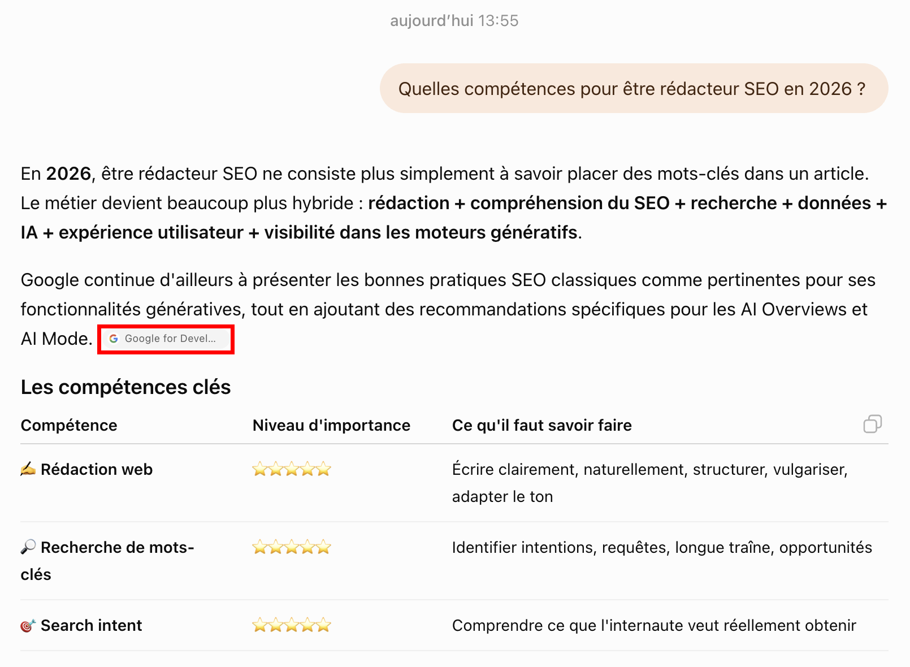
Sources : Digital Applied, zero-click search statistics 2026 ; Evertune, March 2026 Core Update (consultés le 26/09/2026). Réponse de ChatGPT à notre question ; illustration : Pinterest.
12 / 15
Revenons à notre question de départ. En 2026, près de deux recherches Google sur trois se terminent sans aucun clic, et 93 % sur Perplexity. Quand un Aperçu IA s'affiche, les sites perdent en moyenne 18 % de leurs clics.
Mais en mars 2026, Google a aussi pénalisé les contenus génériques, ceux que n'importe qui, ou n'importe quelle IA, aurait pu écrire.
Donc l'IA fait très bien le premier jet, les idées de plan, les reformulations. Mais le rédacteur garde ce qui fait la différence : l'angle, la vérification, l'expérience vécue, et désormais l'art d'écrire des contenus assez fiables pour être cités par les IA elles-mêmes.
À droite, on a posé la question à ChatGPT : sa réponse s'appuie sur une source, Google for Developers, encadrée en rouge. C'est exactement ça, être cité par une IA.
Théorie vs terrain
Thème
Ce que disent les fiches métiers
Ce que dit le pro
Écart
Missions
Articles, fiches produits, pages catégories
Après l'interview
?
Outils
Semrush, YourTextGuru, WordPress, Search Console
Après l'interview
?
Salaire débutant
1 700 à 2 000 € brut par mois
Après l'interview
?
L'IA
Un assistant, pas un remplaçant
Après l'interview
?
Évolution
Content Manager, consultant, GEO
Après l'interview
?
Interview semi-directive d'un professionnel de la rédaction SEO, anonymisé, le JJ/MM/2026 (enregistrement audio disponible).
13 / 15
Pour finir notre enquête, on a confronté ce qu'on avait trouvé dans les fiches métiers à ce que nous a dit un professionnel, le patron d'une entreprise qui pratique la rédaction SEO au quotidien.
[À compléter après l'interview : là où il confirme, et surtout là où il nous a surpris.]
L'IA écrit le premier jet. Le rédacteur SEO décide de ce qui est publié.
−18 %
Moins de clicsDes lecteurs plus qualifiés
E-E-A-T
L'IA rédige viteL'humain vérifie, choisit l'angle, apporte son vécu
GEO
Être cité par les IALe GEO, nouveau terrain du métier
Ce que ce travail nous a apprisUne phrase du groupe, après l'interviewÀ écrire ensemble
Source : Digital Applied, zero-click search statistics 2026 (consulté le 26/09/2026).
14 / 15
Alors, que devient le rédacteur SEO quand Google répond avant les sites ?
Notre réponse tient en trois blocs. D'abord, il y a moins de clics : 18 % de moins quand un Aperçu IA s'affiche. Mais ceux qui cliquent encore sont des lecteurs plus qualifiés.
Ensuite, l'IA rédige vite, mais il y a un cadre que Google met en avant pour juger la qualité d'un contenu : le E-E-A-T. Ça veut dire Experience, Expertise, Autorité et Fiabilité. Autrement dit : l'auteur a-t-il vécu ce dont il parle, s'y connaît-il, est-il reconnu, et peut-on lui faire confiance ? Ce n'est pas un facteur de classement direct, c'est ce que Google cherche à repérer. Et l'expérience vécue, seul un humain peut l'apporter : il vérifie, il choisit l'angle, il raconte ce qu'il a vécu.
Et enfin, un nouveau terrain s'ouvre : le GEO, écrire pour être cité par les IA elles-mêmes.
Donc l'IA écrit le premier jet, mais c'est le rédacteur qui décide de ce qui est publié. Merci de nous avoir écoutés.
Annexe : sources et outils utilisés
Perez, I. (2026). R5.MDEE.12 Référencement, support des séances 1 et 2 (slides 12, 14 et 20). IUT de Lille. Moodle.
Perez, I. (2026). R5.MDEE.12 Référencement, syllabus. IUT de Lille. Moodle.
Charansol, M. et Prat, M. Référencement de votre site web (7e éd.). ENI. Livre de référence du cours.
Google. (2026). Recherche « Comment devient-on performant en SEO », Aperçu IA. 25/09/2026.
Toutes nos sources sont ici, ainsi que la façon dont on a utilisé l'IA.
On s'est servis de Claude pour chercher et recouper les chiffres, et pour concevoir les slides. Mais il ne remplace pas le terrain : les salaires, on les a vérifiés sur de vraies offres, et le métier, on l'a confronté à un professionnel. Toutes les captures ont été prises en vrai, et on a encadré en rouge ce qui prouve chaque chiffre.
 Keyword Planner
Keyword Planner ChatGPT
ChatGPT WordPress
WordPress Ahrefs
Ahrefs Claude
Claude